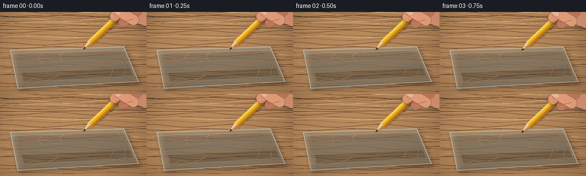
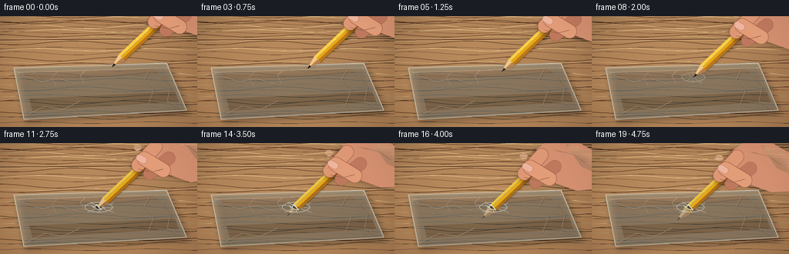
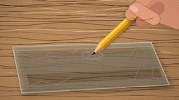
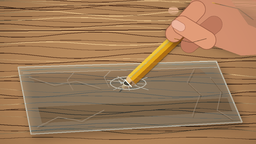
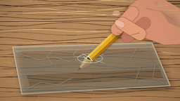

CODING AGENTS AS PIXEL WORLD MODELS
traex/GPT-5.6-Sol · mechanics_0029
点击播放 · 原生 RGB 像素
逐轮保存的候选
回放视频、检查图与代码变化。
每份候选均可单独播放。实际图片检查记录在下方工具轨迹中。
候选 01播放与检查图
点击播放 · 原生 RGB 像素


展开代码变化
--- 上一保存版本
+++ 本次保存版本
@@ -0,0 +1,215 @@
+import math
+from pathlib import Path
+import numpy as np
+from PIL import Image, ImageDraw, ImageFilter
+import artifact_io
+
+W,H,N,S = 256,144,20,4
+rng=np.random.default_rng(29)
+
+def sc(v): return int(round(v*S))
+def pts(seq): return [(sc(x),sc(y)) for x,y in seq]
+def bez(p0,p1,p2,p3,n=40):
+ out=[]
+ for i in range(n+1):
+ t=i/n; u=1-t
+ out.append((u**3*p0[0]+3*u*u*t*p1[0]+3*u*t*t*p2[0]+t**3*p3[0],
+ u**3*p0[1]+3*u*u*t*p1[1]+3*u*t*t*p2[1]+t**3*p3[1]))
+ return out
+
+def line(draw, xy, fill, width=1): draw.line(pts(xy), fill=fill, width=max(1,sc(width)), joint='curve')
+def ellipse(draw, box, fill, outline=None, width=1):
+ draw.ellipse(tuple(sc(x) for x in box), fill=fill, outline=outline, width=max(1,sc(width)))
+def polygon(draw, xy, fill): draw.polygon(pts(xy), fill=fill)
+
+def capsule(layer, center, size, angle, fill, outline=None, ow=1):
+ w,h=size
+ tile=Image.new('RGBA',(sc(w+10),sc(h+10)),(0,0,0,0)); d=ImageDraw.Draw(tile)
+ d.rounded_rectangle((sc(5),sc(5),sc(w+5),sc(h+5)),radius=sc(h/2),fill=fill,outline=outline,width=sc(ow))
+ rot=tile.rotate(angle,resample=Image.Resampling.BICUBIC,expand=True)
+ layer.alpha_composite(rot,(sc(center[0])-rot.width//2,sc(center[1])-rot.height//2))
+
+def base_background():
+ yy,xx=np.mgrid[0:H*S,0:W*S]
+ # warm, softly lit wood countertop
+ glow=np.exp(-((xx-W*S*.43)**2/(W*S*.65)**2+(yy-H*S*.42)**2/(H*S*.9)**2))
+ arr=np.empty((H*S,W*S,3),dtype=np.float32)
+ arr[:,:,0]=143+39*glow+7*yy/(H*S)
+ arr[:,:,1]=103+34*glow+5*yy/(H*S)
+ arr[:,:,2]=68+24*glow+3*yy/(H*S)
+ noise=rng.normal(0,1.2,(H*S,W*S))
+ arr += noise[:,:,None]
+ im=Image.fromarray(np.uint8(np.clip(arr,0,255)),'RGB').convert('RGBA')
+ d=ImageDraw.Draw(im,'RGBA')
+ # long natural grain, deliberately subtle
+ for i in range(34):
+ y=(i*19.7+7*math.sin(i*1.8))%(H*S)/S
+ amp=1.2+1.4*(i%4)/3
+ col=(75,42,25,13) if i%3 else (245,209,151,12)
+ curve=[]
+ for x in range(-10,267,7): curve.append((x,y+amp*math.sin(x/24+i)))
+ line(d,curve,col,.45+(i%2)*.3)
+ # background board join
+ line(d,[(-5,31),(261,29)],(91,57,37,35),1.2)
+ line(d,[(-5,32),(261,30)],(239,199,139,22),.7)
+ return im
+
+BG=base_background()
+A=np.array([0.728,-0.686]) # from point toward eraser / upper-right
+P=np.array([0.686,0.728])
+
+# reusable bag geometry
+bag_poly=[(18,67),(216,61),(242,122),(31,134)]
+
+def pencil_layer(tip, opacity=255):
+ tip=np.array(tip,float); L=165; cone=18; half=5.7
+ far=tip+A*L; base=tip+A*cone
+ layer=Image.new('RGBA',(W*S,H*S),(0,0,0,0)); d=ImageDraw.Draw(layer,'RGBA')
+ # soft offset shadow under pencil
+ sh=Image.new('RGBA',layer.size,(0,0,0,0)); sd=ImageDraw.Draw(sh,'RGBA')
+ polygon(sd,[tuple(tip+np.array([2,3])),tuple(far+P*half+np.array([2,3])),tuple(far-P*half+np.array([2,3]))],(37,24,15,90))
+ sh=sh.filter(ImageFilter.GaussianBlur(sc(2.2))); layer.alpha_composite(sh)
+ # yellow lacquered shaft
+ polygon(d,[tuple(base+P*half),tuple(far+P*half),tuple(far-P*half),tuple(base-P*half)],(229,168,24,opacity))
+ # darker lower facet and bright upper facet
+ polygon(d,[tuple(base+P*1.5),tuple(far+P*1.5),tuple(far+P*half),tuple(base+P*half)],(190,118,14,int(opacity*.9)))
+ polygon(d,[tuple(base-P*half),tuple(far-P*half),tuple(far-P*2.4),tuple(base-P*2.4)],(255,211,59,int(opacity*.95)))
+ line(d,[tuple(base+P*half),tuple(far+P*half)],(101,63,14,int(opacity*.55)),.7)
+ line(d,[tuple(base-P*2.7),tuple(far-P*2.7)],(255,240,142,int(opacity*.7)),.65)
+ # exposed sharpened wood
+ polygon(d,[tuple(tip),tuple(base+P*half),tuple(base-P*half)],(225,177,112,opacity))
+ polygon(d,[tuple(tip),tuple(base+P*half),tuple(base+P*.7)],(183,126,75,int(opacity*.8)))
+ polygon(d,[tuple(tip),tuple(base-P*.7),tuple(base-P*half)],(246,203,137,int(opacity*.95)))
+ # graphite point
+ g=tip+A*5.3
+ polygon(d,[tuple(tip),tuple(g+P*1.45),tuple(g-P*1.45)],(38,39,37,opacity))
+ line(d,[tuple(tip+A*1),tuple(g-P*.25)],(9,12,13,opacity),.65)
+ return layer
+
+def top_half_mask(cp):
+ yy,xx=np.mgrid[0:H*S,0:W*S]
+ xf=xx/S; yf=yy/S
+ proj=(xf-cp[0])*A[0]+(yf-cp[1])*A[1]
+ # soft edge at membrane plane
+ m=np.clip((proj+0.5)*255/1.2,0,255).astype(np.uint8)
+ return Image.fromarray(m,'L')
+
+def draw_hand(canvas, tip):
+ tip=np.array(tip,float); g=tip+A*93
+ layer=Image.new('RGBA',canvas.size,(0,0,0,0))
+ # overall hand shadow
+ shadow=Image.new('RGBA',canvas.size,(0,0,0,0))
+ capsule(shadow,(g[0]+35,g[1]-5),(83,43),-15,(48,24,16,110))
+ capsule(shadow,(g[0]-1,g[1]-5),(47,18),42,(48,24,16,105))
+ shadow=shadow.filter(ImageFilter.GaussianBlur(sc(3))); canvas.alpha_composite(shadow,(sc(2),sc(3)))
+ d=ImageDraw.Draw(layer,'RGBA')
+ # palm silhouette extends naturally beyond the frame
+ palm=[(g[0]+4,g[1]-27),(g[0]+22,g[1]-40),(g[0]+54,g[1]-38),(g[0]+84,g[1]-21),
+ (g[0]+98,g[1]+4),(g[0]+88,g[1]+25),(g[0]+55,g[1]+27),(g[0]+27,g[1]+17),(g[0]+10,g[1]+8)]
+ polygon(d,palm,(211,143,111,255))
+ # palm warm edge and soft highlight
+ polygon(d,[(g[0]+40,g[1]-35),(g[0]+69,g[1]-27),(g[0]+92,g[1]-7),(g[0]+88,g[1]+7),(g[0]+62,g[1]-4)],(232,166,132,150))
+ # index finger curls down left around pencil
+ capsule(layer,(g[0]-1,g[1]-7),(51,18),47,(221,151,116,255),(155,92,70,180),.7)
+ # farther middle finger behind thumb
+ capsule(layer,(g[0]+15,g[1]+6),(49,17),39,(190,120,93,255),(135,76,58,150),.6)
+ # thumb across the yellow shaft
+ capsule(layer,(g[0]+8,g[1]+4),(48,19),-31,(226,156,120,255),(151,91,67,190),.7)
+ d=ImageDraw.Draw(layer,'RGBA')
+ # thumb nail, subtle and translucent pink
+ nailc=np.array([g[0]-8,g[1]-3])
+ capsule(layer,tuple(nailc),(15,9),-30,(240,186,164,220),(174,111,91,150),.55)
+ d=ImageDraw.Draw(layer,'RGBA')
+ line(d,[(g[0]-12,g[1]+10),(g[0]+5,g[1]+14),(g[0]+20,g[1]+10)],(132,76,60,70),.8)
+ line(d,[(g[0]+26,g[1]-26),(g[0]+52,g[1]-20),(g[0]+67,g[1]-9)],(255,207,175,75),1.0)
+ # fingertip highlight
+ ellipse(d,(g[0]-18,g[1]-22,g[0]-8,g[1]-14),(255,202,174,80))
+ canvas.alpha_composite(layer)
+
+def render(k):
+ t=k/(N-1)
+ # smooth steady press, tiny physically plausible pause as plastic resists
+ e=t*t*(3-2*t)
+ start=np.array([145.,66.]); end=np.array([110.5,100.5])
+ tip=start+(end-start)*e
+ punct_t=.57; cp=np.array([128.0,83.0])
+ # high-end cinematic micro drift of camera/light only
+ im=BG.copy()
+ # bag cast shadow
+ sh=Image.new('RGBA',im.size,(0,0,0,0)); sd=ImageDraw.Draw(sh,'RGBA')
+ polygon(sd,[(22,72),(219,66),(245,126),(34,138)],(25,19,14,92))
+ sh=sh.filter(ImageFilter.GaussianBlur(sc(4.2))); im.alpha_composite(sh)
+ # If punctured, pencil's submerged part appears below translucent film
+ punct=e>=punct_t
+ pencil=pencil_layer(tip)
+ if punct:
+ muted=pencil.copy(); alpha=muted.getchannel('A').point(lambda x:int(x*.56)); muted.putalpha(alpha)
+ im.alpha_composite(muted)
+ # transparent plastic bag fill
+ bag=Image.new('RGBA',im.size,(0,0,0,0)); bd=ImageDraw.Draw(bag,'RGBA')
+ polygon(bd,bag_poly,(187,215,218,48))
+ # broad cold reflection bands
+ polygon(bd,[(29,72),(198,67),(207,75),(35,83)],(241,251,247,28))
+ polygon(bd,[(38,107),(227,98),(232,111),(42,123)],(115,168,177,20))
+ # seams and zip-like top edge
+ line(bd,[(18,67),(216,61),(242,122),(31,134),(18,67)],(224,239,235,135),1.15)
+ line(bd,[(21,70),(216,64)],(99,148,153,95),1.0)
+ line(bd,[(23,73),(217,67)],(235,249,245,120),.65)
+ line(bd,[(31,131),(240,120)],(84,119,125,75),1.0)
+ # crinkles and specular seams
+ crinkles=[[(29,77),(54,85),(76,81),(100,88)],[(194,69),(187,82),(200,94),(192,116)],
+ [(37,127),(58,117),(82,121),(104,110)],[(210,77),(221,91),(217,110),(232,119)],
+ [(111,70),(104,77),(109,87)],[(74,72),(67,80),(73,90)]]
+ for j,c in enumerate(crinkles):
+ line(bd,c,(239,250,248,58 if j%2 else 78),.7)
+ if j<4: line(bd,[(x+1,y+1.4) for x,y in c],(63,105,112,30),.55)
+ im.alpha_composite(bag)
+ # deformation and tearing at the pressure point
+ det=Image.new('RGBA',im.size,(0,0,0,0)); dd=ImageDraw.Draw(det,'RGBA')
+ # actual first contact is around e=.18
+ press=np.clip((e-.18)/(punct_t-.18),0,1)
+ if e>=.18 and not punct:
+ center=tip
+ rx=8+14*press; ry=3.2+5.5*press
+ # oblique stretched concentric membrane rings
+ ellipse(dd,(center[0]-rx,center[1]-ry,center[0]+rx,center[1]+ry),(90,105,101,int(18*press)),(245,255,252,int(135*press)),.8)
+ ellipse(dd,(center[0]-rx*.55,center[1]-ry*.55,center[0]+rx*.55,center[1]+ry*.55),None,(87,115,117,int(95*press)),.7)
+ # creases radiate, strongest near puncture
+ for ang in [-2.75,-2.25,-1.62,-.95,-.25,.4,1.0,1.65,2.35]:
+ r=13+8*(.5+.5*math.sin(ang*7+1)); q=center+np.array([math.cos(ang)*r,math.sin(ang)*r*.48])
+ line(dd,[tuple(center+np.array([math.cos(ang)*3,math.sin(ang)*1.5])),tuple(q)],(238,250,247,int(105*press)),.65)
+ elif punct:
+ prog=np.clip((e-punct_t)/(1-punct_t),0,1)
+ center=cp
+ # taut pucker around pencil and tiny torn aperture
+ ellipse(dd,(center[0]-18,center[1]-6.5,center[0]+18,center[1]+6.5),(58,76,75,18),(246,255,251,145),.85)
+ ellipse(dd,(center[0]-5.0,center[1]-3.0,center[0]+5.0,center[1]+3.0),(34,35,31,185),(249,252,238,210),.8)
+ # small triangular split edges
+ polygon(dd,[(center[0]-5,center[1]),(center[0]-10,center[1]-3.4),(center[0]-7,center[1]+1)],(235,248,245,125))
+ polygon(dd,[(center[0]+4,center[1]),(center[0]+9,center[1]+3),(center[0]+6,center[1]-.8)],(230,244,242,120))
+ for ang,r in [(-2.85,22),(-2.2,18),(-1.45,15),(-.58,23),(.12,19),(.62,25),(1.5,16),(2.35,21)]:
+ st=center+np.array([math.cos(ang)*5,math.sin(ang)*2.5]); q=center+np.array([math.cos(ang)*r,math.sin(ang)*r*.46])
+ line(dd,[tuple(st),tuple(q)],(246,255,252,112),.7)
+ im.alpha_composite(det)
+ # pencil is fully above bag before puncture. Afterward redraw only portion above the puncture plane.
+ if not punct:
+ im.alpha_composite(pencil)
+ else:
+ mask=top_half_mask(cp)
+ top=Image.new('RGBA',im.size,(0,0,0,0)); top.paste(pencil,(0,0),Image.composite(pencil.getchannel('A'),Image.new('L',im.size,0),mask))
+ im.alpha_composite(top)
+ # crisp rim highlight laid over shaft sells penetration
+ rd=ImageDraw.Draw(im,'RGBA')
+ line(rd,[tuple(cp-P*5.0),tuple(cp+P*5.0)],(247,255,249,220),1.05)
+ draw_hand(im,tip)
+ # gentle vignette
+ yy,xx=np.mgrid[0:H*S,0:W*S]; cx,cy=W*S*.49,H*S*.48
+ rr=((xx-cx)/(W*S*.7))**2+((yy-cy)/(H*S*.92))**2
+ va=np.uint8(np.clip((rr-.35)*32,0,32))
+ vig=Image.fromarray(np.dstack([np.zeros_like(va),np.zeros_like(va),np.zeros_like(va),va]),'RGBA')
+ im.alpha_composite(vig)
+ return np.asarray(im.convert('RGB').resize((W,H),Image.Resampling.LANCZOS),dtype=np.uint8)
+
+frames=np.stack([render(i) for i in range(N)])
+artifact_io.save(frames,Path(__file__).resolve().parent)
+print('saved',frames.shape,frames.dtype)
可观测工具轨迹
实际执行的命令与返回图片。
命令 1exit 0
/bin/bash -lc "cat prompt.txt && printf '\\n---RULES---\\n' && cat GENERATION_RULES.md && printf '\\n---SPEC---\\n' && cat task_spec.json"
命令 2exit 0
/bin/bash -lc "find . -maxdepth 2 -type f -printf '%p %s bytes\\n' | sort"
命令 3exit 0
/bin/bash -lc "sed -n '1,240p' artifact_io.py"
命令 4exit 0
/bin/bash -lc "cat > generate.py <<'PY'
import math
from pathlib import Path
import numpy as np
from PIL import Image, ImageDraw, ImageFilter
import artifact_io
W,H,N,S = 256,144,20,4
rng=np.random.default_rng(29)
def sc(v): return int(round(v*S))
def pts(seq): return [(sc(x),sc(y)) for x,y in seq]
def bez(p0,p1,p2,p3,n=40):
out=[]
for i in range(n+1):
t=i/n; u=1-t
out.append((u**3*p0[0]+3*u*u*t*p1[0]+3*u*t*t*p2[0]+t**3*p3[0],
u**3*p0[1]+3*u*u*t*p1[1]+3*u*t*t*p2[1]+t**3*p3[1]))
return out
def line(draw, xy, fill, width=1): draw.line(pts(xy), fill=fill, width=max(1,sc(width)), joint='curve')
def ellipse(draw, box, fill, outline=None, width=1):
draw.ellipse(tuple(sc(x) for x in box), fill=fill, outline=outline, width=max(1,sc(width)))
def polygon(draw, xy, fill): draw.polygon(pts(xy), fill=fill)
def capsule(layer, center, size, angle, fill, outline=None, ow=1):
w,h=size
tile=Image.new('RGBA',(sc(w+10),sc(h+10)),(0,0,0,0)); d=ImageDraw.Draw(tile)
d.rounded_rectangle((sc(5),sc(5),sc(w+5),sc(h+5)),radius=sc(h/2),fill=fill,outline=outline,width=sc(ow))
rot=tile.rotate(angle,resample=Image.Resampling.BICUBIC,expand=True)
layer.alpha_composite(rot,(sc(center[0])-rot.width//2,sc(center[1])-rot.height//2))
def base_background():
yy,xx=np.mgrid[0:H*S,0:W*S]
# warm, softly lit wood countertop
glow=np.exp(-((xx-W*S*.43)**2/(W*S*.65)**2+(yy-H*S*.42)**2/(H*S*.9)**2))
arr=np.empty((H*S,W*S,3),dtype=np.float32)
arr[:,:,0]=143+39*glow+7*yy/(H*S)
arr[:,:,1]=103+34*glow+5*yy/(H*S)
arr[:,:,2]=68+24*glow+3*yy/(H*S)
noise=rng.normal(0,1.2,(H*S,W*S))
arr += noise[:,:,None]
im=Image.fromarray(np.uint8(np.clip(arr,0,255)),'RGB').convert('RGBA')
d=ImageDraw.Draw(im,'RGBA')
# long natural grain, deliberately subtle
for i in range(34):
y=(i*19.7+7*math.sin(i*1.8))%(H*S)/S
amp=1.2+1.4*(i%4)/3
col=(75,42,25,13) if i%3 else (245,209,151,12)
curve=[]
for x in range(-10,267,7): curve.append((x,y+amp*math.sin(x/24+i)))
line(d,curve,col,.45+(i%2)*.3)
# background board join
line(d,[(-5,31),(261,29)],(91,57,37,35),1.2)
line(d,[(-5,32),(261,30)],(239,199,139,22),.7)
return im
BG=base_background()
A=np.array([0.728,-0.686]) # from point toward eraser / upper-right
P=np.array([0.686,0.728])
# reusable bag geometry
bag_poly=[(18,67),(216,61),(242,122),(31,134)]
def pencil_layer(tip, opacity=255):
tip=np.array(tip,float); L=165; cone=18; half=5.7
far=tip+A*L; base=tip+A*cone
layer=Image.new('RGBA',(W*S,H*S),(0,0,0,0)); d=ImageDraw.Draw(layer,'RGBA')
# soft offset shadow under pencil
sh=Image.new('RGBA',layer.size,(0,0,0,0)); sd=ImageDraw.Draw(sh,'RGBA')
polygon(sd,[tuple(tip+np.array([2,3])),tuple(far+P*half+np.array([2,3])),tuple(far-P*half+np.array([2,3]))],(37,24,15,90))
sh=sh.filter(ImageFilter.GaussianBlur(sc(2.2))); layer.alpha_composite(sh)
# yellow lacquered shaft
polygon(d,[tuple(base+P*half),tuple(far+P*half),tuple(far-P*half),tuple(base-P*half)],(229,168,24,opacity))
# darker lower facet and bright upper facet
polygon(d,[tuple(base+P*1.5),tuple(far+P*1.5),tuple(far+P*half),tuple(base+P*half)],(190,118,14,int(opacity*.9)))
polygon(d,[tuple(base-P*half),tuple(far-P*half),tuple(far-P*2.4),tuple(base-P*2.4)],(255,211,59,int(opacity*.95)))
line(d,[tuple(base+P*half),tuple(far+P*half)],(101,63,14,int(opacity*.55)),.7)
line(d,[tuple(base-P*2.7),tuple(far-P*2.7)],(255,240,142,int(opacity*.7)),.65)
# exposed sharpened wood
polygon(d,[tuple(tip),tuple(base+P*half),tuple(base-P*half)],(225,177,112,opacity))
polygon(d,[tuple(tip),tuple(base+P*half),tuple(base+P*.7)],(183,126,75,int(opacity*.8)))
polygon(d,[tuple(tip),tuple(base-P*.7),tuple(base-P*half)],(246,203,137,int(opacity*.95)))
# graphite point
g=tip+A*5.3
polygon(d,[tuple(tip),tuple(g+P*1.45),tuple(g-P*1.45)],(38,39,37,opacity))
line(d,[tuple(tip+A*1),tuple(g-P*.25)],(9,12,13,opacity),.65)
return layer
def top_half_mask(cp):
yy,xx=np.mgrid[0:H*S,0:W*S]
xf=xx/S; yf=yy/S
proj=(xf-cp[0])*A[0]+(yf-cp[1])*A[1]
# soft edge at membrane plane
m=np.clip((proj+0.5)*255/1.2,0,255).astype(np.uint8)
return Image.fromarray(m,'L')
def draw_hand(canvas, tip):
tip=np.array(tip,float); g=tip+A*93
layer=Image.new('RGBA',canvas.size,(0,0,0,0))
# overall hand shadow
shadow=Image.new('RGBA',canvas.size,(0,0,0,0))
capsule(shadow,(g[0]+35,g[1]-5),(83,43),-15,(48,24,16,110))
capsule(shadow,(g[0]-1,g[1]-5),(47,18),42,(48,24,16,105))
shadow=shadow.filter(ImageFilter.GaussianBlur(sc(3))); canvas.alpha_composite(shadow,(sc(2),sc(3)))
d=ImageDraw.Draw(layer,'RGBA')
# palm silhouette extends naturally beyond the frame
palm=[(g[0]+4,g[1]-27),(g[0]+22,g[1]-40),(g[0]+54,g[1]-38),(g[0]+84,g[1]-21),
(g[0]+98,g[1]+4),(g[0]+88,g[1]+25),(g[0]+55,g[1]+27),(g[0]+27,g[1]+17),(g[0]+10,g[1]+8)]
polygon(d,palm,(211,143,111,255))
# palm warm edge and soft highlight
polygon(d,[(g[0]+40,g[1]-35),(g[0]+69,g[1]-27),(g[0]+92,g[1]-7),(g[0]+88,g[1]+7),(g[0]+62,g[1]-4)],(232,166,132,150))
# index finger curls down left around pencil
capsule(layer,(g[0]-1,g[1]-7),(51,18),47,(221,151,116,255),(155,92,70,180),.7)
# farther middle finger behind thumb
capsule(layer,(g[0]+15,g[1]+6),(49,17),39,(190,120,93,255),(135,76,58,150),.6)
# thumb across the yellow shaft
capsule(layer,(g[0]+8,g[1]+4),(48,19),-31,(226,156,120,255),(151,91,67,190),.7)
d=ImageDraw.Draw(layer,'RGBA')
# thumb nail, subtle and translucent pink
nailc=np.array([g[0]-8,g[1]-3])
capsule(layer,tuple(nailc),(15,9),-30,(240,186,164,220),(174,111,91,150),.55)
d=ImageDraw.Draw(layer,'RGBA')
line(d,[(g[0]-12,g[1]+10),(g[0]+5,g[1]+14),(g[0]+20,g[1]+10)],(132,76,60,70),.8)
line(d,[(g[0]+26,g[1]-26),(g[0]+52,g[1]-20),(g[0]+67,g[1]-9)],(255,207,175,75),1.0)
# fingertip highlight
ellipse(d,(g[0]-18,g[1]-22,g[0]-8,g[1]-14),(255,202,174,80))
canvas.alpha_composite(layer)
def render(k):
t=k/(N-1)
# smooth steady press, tiny physically plausible pause as plastic resists
e=t*t*(3-2*t)
start=np.array([145.,66.]); end=np.array([110.5,100.5])
tip=start+(end-start)*e
punct_t=.57; cp=np.array([128.0,83.0])
# high-end cinematic micro drift of camera/light only
im=BG.copy()
# bag cast shadow
sh=Image.new('RGBA',im.size,(0,0,0,0)); sd=ImageDraw.Draw(sh,'RGBA')
polygon(sd,[(22,72),(219,66),(245,126),(34,138)],(25,19,14,92))
sh=sh.filter(ImageFilter.GaussianBlur(sc(4.2))); im.alpha_composite(sh)
# If punctured, pencil's submerged part appears below translucent film
punct=e>=punct_t
pencil=pencil_layer(tip)
if punct:
muted=pencil.copy(); alpha=muted.getchannel('A').point(lambda x:int(x*.56)); muted.putalpha(alpha)
im.alpha_composite(muted)
# transparent plastic bag fill
bag=Image.new('RGBA',im.size,(0,0,0,0)); bd=ImageDraw.Draw(bag,'RGBA')
polygon(bd,bag_poly,(187,215,218,48))
# broad cold reflection bands
polygon(bd,[(29,72),(198,67),(207,75),(35,83)],(241,251,247,28))
polygon(bd,[(38,107),(227,98),(232,111),(42,123)],(115,168,177,20))
# seams and zip-like top edge
line(bd,[(18,67),(216,61),(242,122),(31,134),(18,67)],(224,239,235,135),1.15)
line(bd,[(21,70),(216,64)],(99,148,153,95),1.0)
line(bd,[(23,73),(217,67)],(235,249,245,120),.65)
line(bd,[(31,131),(240,120)],(84,119,125,75),1.0)
# crinkles and specular seams
crinkles=[[(29,77),(54,85),(76,81),(100,88)],[(194,69),(187,82),(200,94),(192,116)],
[(37,127),(58,117),(82,121),(104,110)],[(210,77),(221,91),(217,110),(232,119)],
[(111,70),(104,77),(109,87)],[(74,72),(67,80),(73,90)]]
for j,c in enumerate(crinkles):
line(bd,c,(239,250,248,58 if j%2 else 78),.7)
if j<4: line(bd,[(x+1,y+1.4) for x,y in c],(63,105,112,30),.55)
im.alpha_composite(bag)
# deformation and tearing at the pressure point
det=Image.new('RGBA',im.size,(0,0,0,0)); dd=ImageDraw.Draw(det,'RGBA')
# actual first contact is around e=.18
press=np.clip((e-.18)/(punct_t-.18),0,1)
if e>=.18 and not punct:
center=tip
rx=8+14*press; ry=3.2+5.5*press
# oblique stretched concentric membrane rings
ellipse(dd,(center[0]-rx,center[1]-ry,center[0]+rx,center[1]+ry),(90,105,101,int(18*press)),(245,255,252,int(135*press)),.8)
ellipse(dd,(center[0]-rx*.55,center[1]-ry*.55,center[0]+rx*.55,center[1]+ry*.55),None,(87,115,117,int(95*press)),.7)
# creases radiate, strongest near puncture
for ang in [-2.75,-2.25,-1.62,-.95,-.25,.4,1.0,1.65,2.35]:
r=13+8*(.5+.5*math.sin(ang*7+1)); q=center+np.array([math.cos(ang)*r,math.sin(ang)*r*.48])
line(dd,[tuple(center+np.array([math.cos(ang)*3,math.sin(ang)*1.5])),tuple(q)],(238,250,247,int(105*press)),.65)
elif punct:
prog=np.clip((e-punct_t)/(1-punct_t),0,1)
center=cp
# taut pucker around pencil and tiny torn aperture
ellipse(dd,(center[0]-18,center[1]-6.5,center[0]+18,center[1]+6.5),(58,76,75,18),(246,255,251,145),.85)
ellipse(dd,(center[0]-5.0,center[1]-3.0,center[0]+5.0,center[1]+3.0),(34,35,31,185),(249,252,238,210),.8)
# small triangular split edges
polygon(dd,[(center[0]-5,center[1]),(center[0]-10,center[1]-3.4),(center[0]-7,center[1]+1)],(235,248,245,125))
polygon(dd,[(center[0]+4,center[1]),(center[0]+9,center[1]+3),(center[0]+6,center[1]-.8)],(230,244,242,120))
for ang,r in [(-2.85,22),(-2.2,18),(-1.45,15),(-.58,23),(.12,19),(.62,25),(1.5,16),(2.35,21)]:
st=center+np.array([math.cos(ang)*5,math.sin(ang)*2.5]); q=center+np.array([math.cos(ang)*r,math.sin(ang)*r*.46])
line(dd,[tuple(st),tuple(q)],(246,255,252,112),.7)
im.alpha_composite(det)
# pencil is fully above bag before puncture. Afterward redraw only portion above the puncture plane.
if not punct:
im.alpha_composite(pencil)
else:
mask=top_half_mask(cp)
top=Image.new('RGBA',im.size,(0,0,0,0)); top.paste(pencil,(0,0),Image.composite(pencil.getchannel('A'),Image.new('L',im.size,0),mask))
im.alpha_composite(top)
# crisp rim highlight laid over shaft sells penetration
rd=ImageDraw.Draw(im,'RGBA')
line(rd,[tuple(cp-P*5.0),tuple(cp+P*5.0)],(247,255,249,220),1.05)
draw_hand(im,tip)
# gentle vignette
yy,xx=np.mgrid[0:H*S,0:W*S]; cx,cy=W*S*.49,H*S*.48
rr=((xx-cx)/(W*S*.7))**2+((yy-cy)/(H*S*.92))**2
va=np.uint8(np.clip((rr-.35)*32,0,32))
vig=Image.fromarray(np.dstack([np.zeros_like(va),np.zeros_like(va),np.zeros_like(va),va]),'RGBA')
im.alpha_composite(vig)
return np.asarray(im.convert('RGB').resize((W,H),Image.Resampling.LANCZOS),dtype=np.uint8)
frames=np.stack([render(i) for i in range(N)])
artifact_io.save(frames,Path(__file__).resolve().parent)
print('saved',frames.shape,frames.dtype)
PY
python generate.py"视觉工具实际返回图片 1

视觉工具实际返回图片 2

视觉工具实际返回图片 3

视觉工具实际返回图片 4

保存候选 1 份；完成命令 4 次；可验证图片返回 4 张。原始 API 响应与完整日志保留在本地。